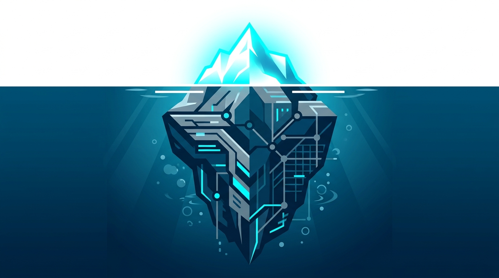
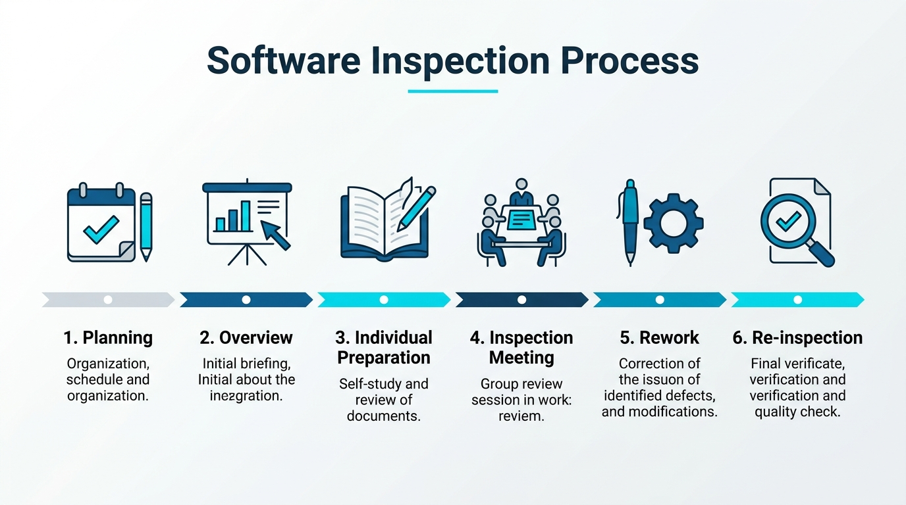
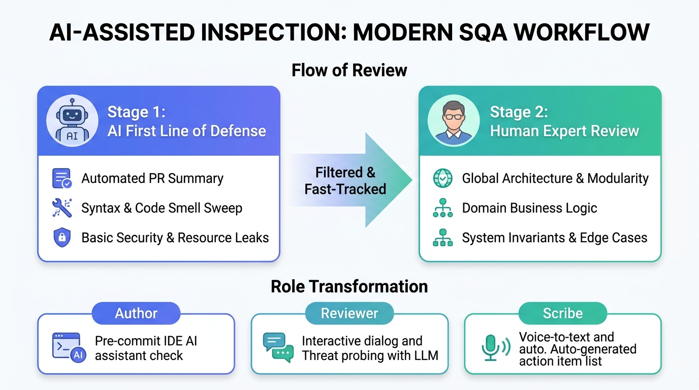
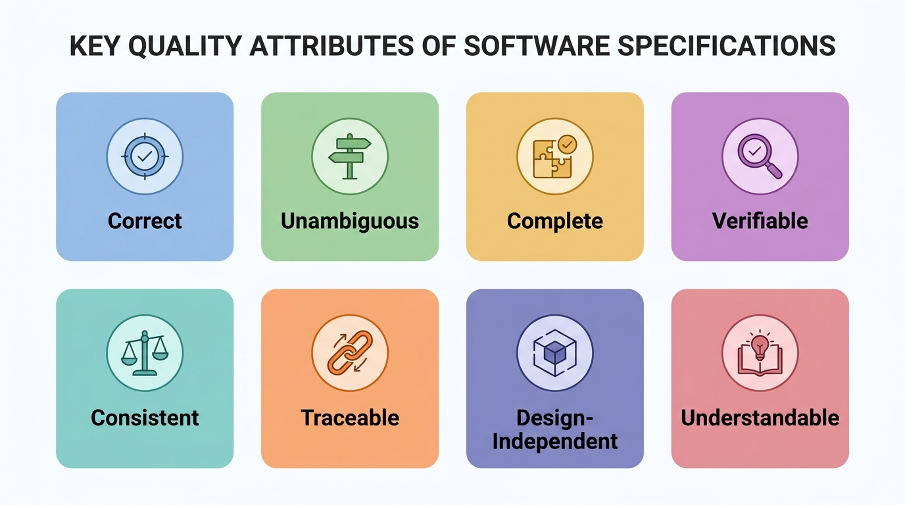
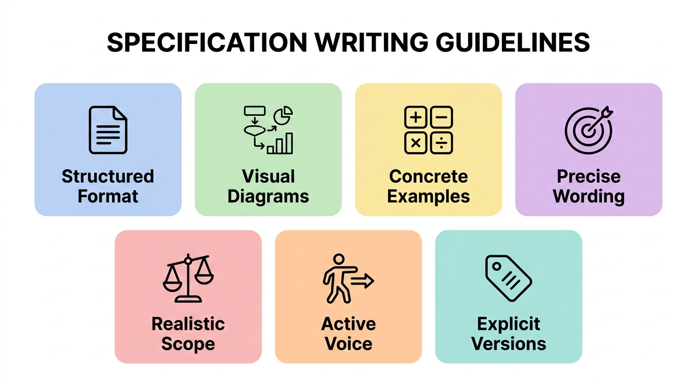
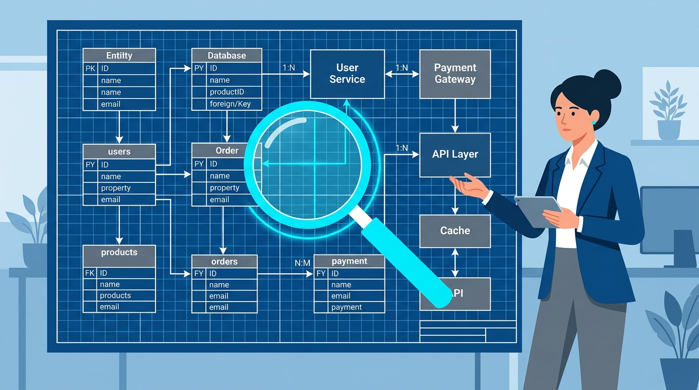
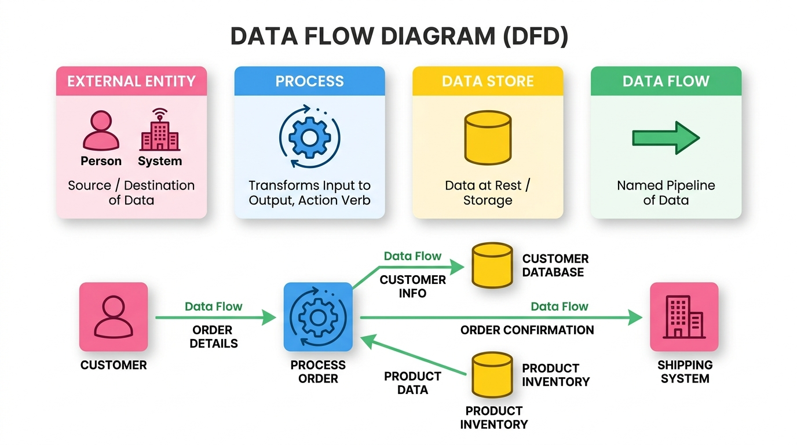
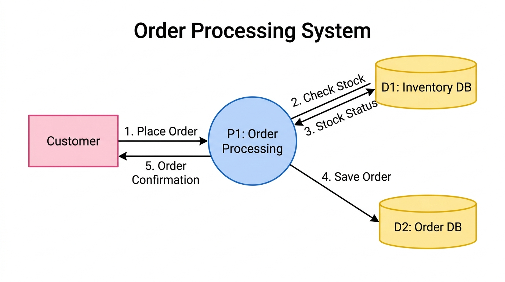
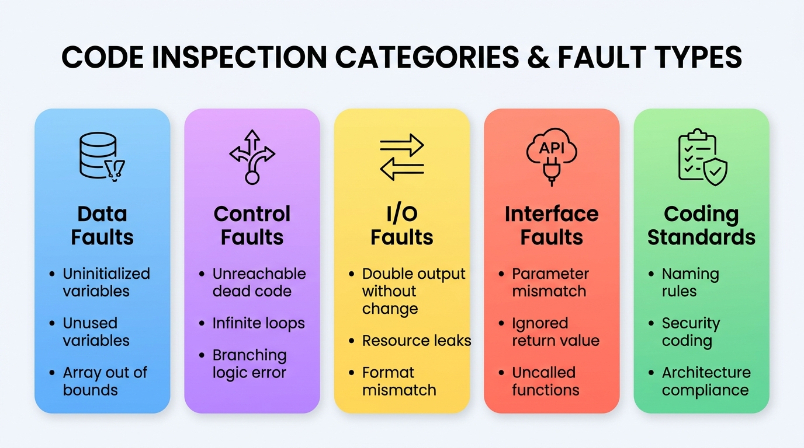
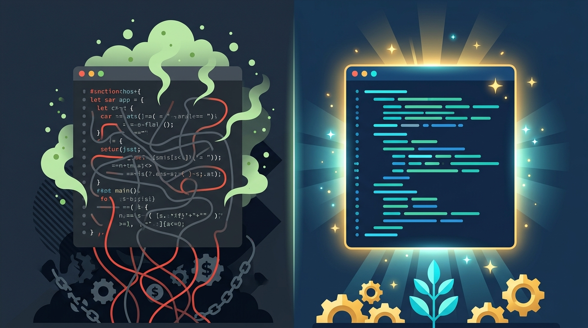

授課教師：薛念林 教授
到了測試階段才突然重視起品質，為時已晚。 同儕找到錯誤，絕對比顧客在線上找到錯誤好上一萬倍。 —— Michael Fagan (軟體檢視發明人)
「動態測試只能看見浮出水面的冰山一角； 唯有靜態檢視，能深入水下根除架構暗礁。」
動態執行就像用手電筒照海面，每次只能照亮特定情境；靜態檢視則是抽乾海水，全面盤點結構問題。
for (int i = 1; i < max; i++) { ... } // 陣列下標從 1 開始？
i = 1

軟體檢視是技術活動，更是建立企業品質文化的「社群活動 (Social Activity)」。
沒有規格與準則的檢視只會淪為主觀爭執；成熟的檢視需要制度與資源的強力支撐。
問題情境： 【是非題】靜態測試（如軟體檢視、規格檢視）可以在程式碼實際編譯執行之前，檢查需求、設計、程式碼甚至測試資料中的異常，以早期發現錯誤、大幅降低整體的軟體品質成本。
課堂互動
「正式檢視比非正式走查嚴謹數倍； 讓 AI 先行掃雷，人類專家方能聚焦於全局智慧。」
依據 IEEE 1028 標準，不同審查形式在正規度、計畫性與主導角色上有著嚴格區分。
1976 年 IBM Michael Fagan 提出的經典檢視流程，被軟體工程界公認為最具實效的除錯典範。

清楚的角色分工能避免「原作者自圓其說」與「會議淪為個人批鬥」的無效困境。
流程革命：從傳統「耗時耗力的純人工會議」，轉向「AI 機器人先行掃雷 + 人類專家深層把關」。

AI 雖然強大但存在幻覺與上下文盲區；人類工程師的最終決策依然是系統品質的終極守門人。
/review
AI 是極佳的初審助手，但絕不能省略人類專家的架構決策與業務邏輯驗證！
問題情境： 在 Fagan 提出的軟體檢視（Inspection）標準流程中，下列哪一個階段的主要目的是由作者向檢視小組說明系統背景資料、規格與業務規則，而非進行實際的程式碼除錯？
「規格書寫錯一條，後續將以十倍工時重做； 規格檢視是投資回報率最高的除錯手段。」
軟體需求規格書 (SRS) 是整個系統工程的基石；好的規格必須兼具技術嚴謹度與客觀驗證性。

雙向追溯能保證「不漏掉任何客戶需求」，同時杜絕工程師「憑空實作鍍金功能」。
優秀的規格書能大幅降低工程溝通成本；掌握 7 大撰寫準則，消滅潛在需求模糊性。

一個模糊的字眼，在實作階段會被解讀出十種不同版本；規格必須消除所有臆測空間。
問題情境： 為了在需求與系統規格階段落實「雙向追溯 (Bidirectional Traceability)」，規格書應該確保具備下列何種關係特性？
「程式碼是磚瓦，架構設計才是地基； 挽救一個錯誤的架構，往往需要拆毀整棟大樓。」
設計檢視 (Design Review) 是在 Coding 之前，針對架構模組、介面協定與資料庫 Schema 的靜態審查。

資料流程圖 (DFD) 為結構化分析利器；利用語法嚴謹的模型特徵能進行高效率檢核。

透過標準 DFD 流程圖檢驗：資料流向是否合規？處理過程與資料儲存是否皆維持平衡？
1. 提交訂單 (Place Order)
2. 檢查庫存 (Check Stock)
3. 庫存狀態 (Stock Status)
4. 寫入訂單 (Save Order)
5. 出貨確認 (Order Confirmation)

利用大型語言模型模擬駭客視角與極端情境，讓架構設計在動工前就接受震撼教育。
問題情境： 【是非題】設計檢視（Design Review）最理想的執行時機，是在系統所有模組的單元測試與整合測試皆通過之後，以確保實際產出的系統程式碼與設計文件完全相符。
「任何笨蛋都能寫出電腦看得懂的程式碼； 優秀的工程師寫的是人類看得懂的程式碼。」 —— Martin Fowler
呼應第二章 Clean Code 心法，程式碼檢視將開發者個人自律昇華為「團隊制度化防禦防線」。

透過團隊 Checklists 讓 Code Review 具備一致的客觀尺度，避免流於個人主觀風格偏好。
temp
a1
null
Clean Code 是健康目標，Code Smells 是病徵警訊，Refactoring (重構) 則是處方藥。

當類別與函式承載過多責任時，系統將失去彈性並成為人人不敢觸碰的「巨石怪獸」。
String
int
Money
Phone
Address
類別之間的關係應該是「相敬如賓」，過度依賴與親密將導致動一髮而動全身的骨牌效應。
a.getB().getC().getD().doSomething()
程式碼檢視不僅防範邏輯缺陷，更必須築起嚴密的資安防線；SAST 工具是落實安全的最佳盟友。
透過 PMD、SonarQube 與 Checkmarx 等靜態分析工具，在 CI/CD 流程中自動攔截惡意漏洞。
e.printStackTrace()
問題情境： 【是非題】在程式碼檢視中，若發現系統直接將詳細的例外錯誤堆疊資訊（如 e.printStackTrace()）輸出至前端頁面或公開日誌，這屬於 OWASP Top 10 中的「A05:2021-安全設定錯誤 (Security Misconfiguration)」漏洞範疇。
「無法度量的東西，就無法改善； 用數據證明檢視的價值，讓品質投資無懈可擊。」
透過工程數據評估檢視活動之效益，能有效量化品質投資報酬率 (ROI) 並指引流程優化。
發現缺失數量審查所耗費工時小時
留至後期修復測試之平均成本在檢視階段揪出並修復之成本
貪快是檢視最大的敵人；維持健康的閱讀步調才能真正守護品質底線。
問題情境： 組織在推行軟體檢視與審查時，常會使用度量指標來評估其效率。下列關於「檢視速率 (Review Rate)」與「檢視品質」的敘述，何者最為正確？
本章課堂互動 (CCQ 1 ～ CCQ 6) 官方標準解答與核心觀念解析總整理。
printStackTrace()
id: sqa-ch04-ccq1
id: sqa-ch04-ccq2
id: sqa-ch04-ccq3
id: sqa-ch04-ccq4
id: sqa-ch04-ccq5
id: sqa-ch04-ccq6